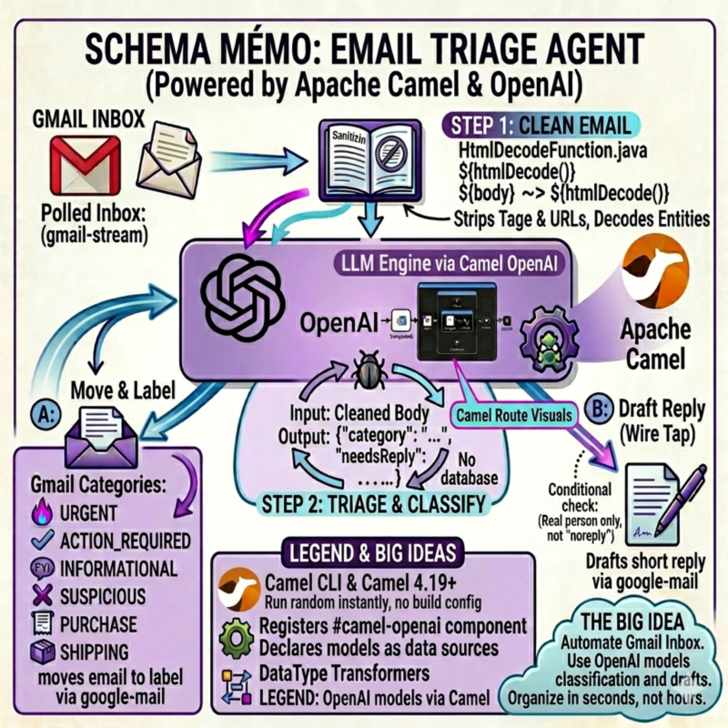
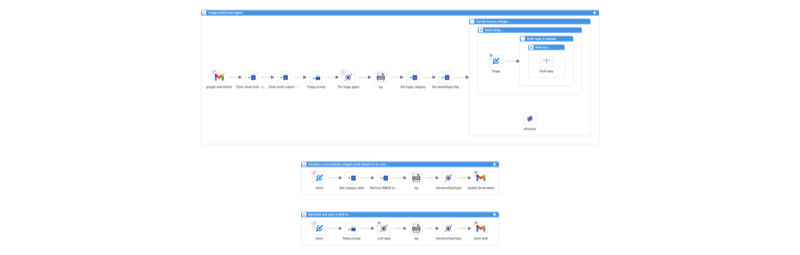

Recent Camel releases introduced several features that work well together for AI-powered integrations: the camel-openai component (4.17), the SimpleFunction interface, chain operator, and structured output with JSON Schema (4.18), and Gmail DataType Transformers (4.19).
To show how these pieces fit, I built an email triage agent that classifies Gmail messages using an LLM, moves them to labels, and drafts smart replies. The whole thing runs with Camel JBang. No Maven project, no framework setup.
Overview
The agent polls Gmail for unread emails, sends each one to OpenAI for classification, moves it to a matching Gmail label, and optionally drafts a reply. Six categories: URGENT, ACTION_REQUIRED, INFORMATIONAL, SECURITY_ALERT, PURCHASE, SHIPPING.
Three Camel routes handle the full flow. Here is what they look like in Kaoto:

Let’s walk through each route and the Camel features they use.
Route 1: The Main Agent
The main route polls Gmail, sanitizes the email, classifies it with OpenAI, and decides what to do next.
- route:
id: triage-email-main-agent
from:
uri: google-mail-stream:0
parameters:
applicationName: camel-email-triage
delay: "10000"
markAsRead: "false"
query: is:unread in:inbox
The google-mail-stream consumer fetches unread emails every 10 seconds. It exposes the email subject and sender as Camel headers (CamelGoogleMailStreamSubject, CamelGoogleMailStreamFrom), and the body as the message body.
Sanitization with SimpleFunction
Raw emails contain HTML, tracking pixels, and URLs with thousands of encoded parameters. Sending all of that to an LLM is a problem. During testing, a marketing email with massive tracking URLs caused the model to interpret URL content as additional instructions. Instead of returning JSON, it responded with “Do you want me to do anything else with this information?” Classic indirect prompt injection.
Camel 4.18 introduced the SimpleFunction interface to plug custom functions into Simple expressions. The agent uses one with Jsoup to parse the HTML and strip tags and URLs before anything reaches the LLM:
@BindToRegistry("html-decode-function")
public class HtmlDecodeFunction implements SimpleFunction {
@Override
public String getName() {
return "htmlDecode";
}
@Override
public Object apply(Exchange exchange, Object input) throws Exception {
String text = Jsoup.parse(input.toString()).text();
...
}
}
The route chains it using the ~> operator (also introduced in 4.18) to pipe the body and subject through the sanitizer:
steps:
- setVariable:
name: cleanedEmailBody
simple:
expression: ${body} ~> ${htmlDecode()}
- setVariable:
name: cleanedSubject
simple:
expression: ${header.CamelGoogleMailStreamSubject} ~> ${htmlDecode()}
No separate processor, no extra route step. One expression.
Classification with camel-openai and Structured Output
The camel-openai component, introduced in Camel 4.17, provides native integration with OpenAI and OpenAI-compatible APIs. It uses the official openai-java SDK and supports chat completion, structured output, streaming, conversation memory, and multi-modal input.
The route sends the cleaned email to OpenAI. The prompt is minimal: just “classify the following email” and the email content. All the classification logic lives in the JSON schema:
- setBody:
simple: "Classify the following email. From: ${header.CamelGoogleMailStreamFrom} Subject: ${variable.cleanedSubject} Body: --- ${variable.cleanedEmailBody} ---"
- to:
uri: openai:chat-completion
parameters:
jsonSchema: "resource:classpath:email-triage-result.schema.json"
The jsonSchema parameter uses OpenAI Structured Outputs: the model is constrained to produce JSON that matches the provided schema. The schema file (email-triage-result.schema.json) defines the output structure, the valid categories, and the rules:
{
"type": "object",
"properties": {
"rationale": {
"type": "string",
"description": "Step-by-step reasoning. First, identify the email's core intent (e.g., incident report, newsletter, order confirmation). Second, check for urgency signals (deadlines, security alerts, escalations). Third, choose the category that best matches. Definitions: URGENT (deadlines, incidents, escalations), ACTION_REQUIRED (asks you to do something/reply), INFORMATIONAL (FYI, newsletters, automated notifications that require no action), SECURITY_ALERT (security alerts, CVEs, breach notifications, suspicious login attempts), PURCHASE (orders, invoices), SHIPPING (tracking, delivery updates). Rules: If in doubt between ACTION_REQUIRED and INFORMATIONAL, choose ACTION_REQUIRED. State which category you choose and why."
},
"category": {
"type": "string",
"description": "The category chosen in the rationale above.",
"enum": [
"URGENT",
"ACTION_REQUIRED",
"INFORMATIONAL",
"SECURITY_ALERT",
"PURCHASE",
"SHIPPING"
]
},
"needsReply": {
"type": "boolean",
"description": "Whether the email needs a reply. True ONLY if a real person is directly asking the recipient something that should be answered by email. False for all automated notifications, platform alerts (JIRA, GitHub, CI/CD), banking, government portals, calendar invites, newsletters, and any sender with noreply/notifications in the address."
}
},
"required": ["rationale", "category", "needsReply"],
"additionalProperties": false
}
The schema is the single source of truth for all classification logic. The rationale field comes first, forcing the model to analyze the email before choosing a category. This is a useful technique for smaller models: instead of relying on an external thinking mode, you let the model reason inside the JSON itself. All category definitions, tiebreaker rules, and step-by-step instructions live in the rationale description. The category field just picks the result. The enum constrains the output to valid values. The prompt stays minimal, the schema handles everything else.
The LLM returns a JSON object. JSONPath extracts the fields into variables:
- setVariable:
name: triageCategory
jsonpath:
expression: $.category
- setVariable:
name: triageNeedsReply
jsonpath:
expression: $.needsReply
Routing Decisions
A Choice EIP validates the category and decides whether to draft a reply based on the LLM’s needsReply flag:
- choice:
when:
- simple:
expression: ${variable.triageCategory} in 'URGENT,ACTION_REQUIRED,INFORMATIONAL,SECURITY_ALERT,PURCHASE,SHIPPING'
steps:
- to:
uri: direct:handle-triaged-email
- choice:
when:
- simple:
expression: ${variable.triageNeedsReply} == true
steps:
- wireTap:
uri: direct:draft-reply
The Wire Tap fires off the reply generation asynchronously. The label update happens immediately. The draft shows up a few seconds later.
Route 2: Gmail Label Management with DataType Transformers
Camel 4.19 introduces DataType Transformers for the Gmail component. These eliminate the boilerplate of manually constructing Gmail API request objects.
The label route sets two variables and lets the transformer build the ModifyMessageRequest:
- route:
id: handle-triaged-email
from:
uri: direct:handle-triaged-email
steps:
- setVariable:
name: addLabels
simple: ${variable.triageCategory}
- setVariable:
name: removeLabels
constant: INBOX
- transformDataType:
toType: google-mail:update-message-labels
- to:
uri: google-mail:messages/modify
parameters:
inBody: modifyMessageRequest
applicationName: camel-email-triage
userId: me
No Java code. The google-mail:update-message-labels transformer reads addLabels and removeLabels from the exchange variables and builds the API request automatically.
Route 3: Drafting Replies with DataType Transformers
The reply route uses the same pattern. It sends the email to OpenAI with a reply prompt, then uses the google-mail:draft transformer to construct a proper Draft object with email headers (In-Reply-To, References, To, Subject):
- route:
id: draft-reply
from:
uri: direct:draft-reply
steps:
- setBody:
simple: "Draft a short, professional email reply (under 100 words). Output ONLY the reply body text, no subject, no metadata. Do NOT fabricate information. If you cannot answer, say you will follow up. From: ${header.CamelGoogleMailStreamFrom} Subject: ${variable.cleanedSubject} Body: ${variable.cleanedEmailBody}"
- to:
uri: openai:chat-completion
- transformDataType:
toType: google-mail:draft
- to:
uri: google-mail:drafts/create
parameters:
inBody: content
applicationName: camel-email-triage
userId: me
The draft is saved in Gmail. The user reviews it before sending.
Model Choice
The default model is OpenAI GPT-5. You can change it in application.properties. The camel-openai component works with any OpenAI-compatible API via the baseUrl parameter. To use a local LLM that supports OpenAI-style structured output, just point the baseUrl to your local server:
camel.component.openai.model=your-model
camel.component.openai.baseUrl=http://localhost:11434/v1
camel.component.openai.apiKey=ollama
If you run into limitations with small models or Ollama-specific issues (e.g., the model generates correct reasoning but picks wrong categories), the local-llm/ directory contains a variant using Gemma 4 via Ollama with a system prompt and few-shot examples pattern that works reliably with small local models.
Running with Camel JBang
The entire agent is a set of YAML routes, one Java file, and a JSON schema. External dependencies like Jsoup are declared in application.properties via camel.jbang.dependencies, so Camel JBang runs it with a simple:
camel run *
Before running, you need Gmail OAuth2 credentials and an OpenAI API key configured in application.properties. You also need to create six Gmail labels: URGENT, ACTION_REQUIRED, INFORMATIONAL, SECURITY_ALERT, PURCHASE, SHIPPING. The full Gmail setup guide is in the project README.
Camel Features Recap
This agent brings together features from three recent Camel releases:
- Camel 4.17:
camel-openaicomponent for LLM chat completion - Camel 4.18:
SimpleFunctioninterface for custom expression functions, and the~>chain operator - Camel 4.18:
camel-openaistructured output withjsonSchemaparameter for guaranteed valid JSON responses - Camel 4.19: Gmail DataType Transformers (
google-mail:update-message-labels,google-mail:draft) - Camel JBang: Run YAML routes and Java files directly, no build config needed
- Wire Tap EIP: Async reply drafting without blocking label updates
Source Code
The full example is available on GitHub: camel-ai-samples/email-triage-agent.
What’s Next
A local LLM variant using Gemma 4 via Ollama is included in the local-llm/ directory. It uses the same camel-openai component but with a system prompt, few-shot examples, and low temperature to work around limitations of small models with structured output on Ollama.
The draft reply part could also be improved. Right now the reply prompt is generic. Ideally it should learn the user’s tone and style so the drafts actually sound like something they would write.
We’d love to hear your feedback. Try the agent, adapt it to your use case, and let us know how it goes on the Apache Camel mailing list or Zulip chat.